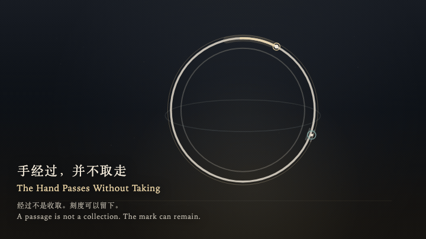
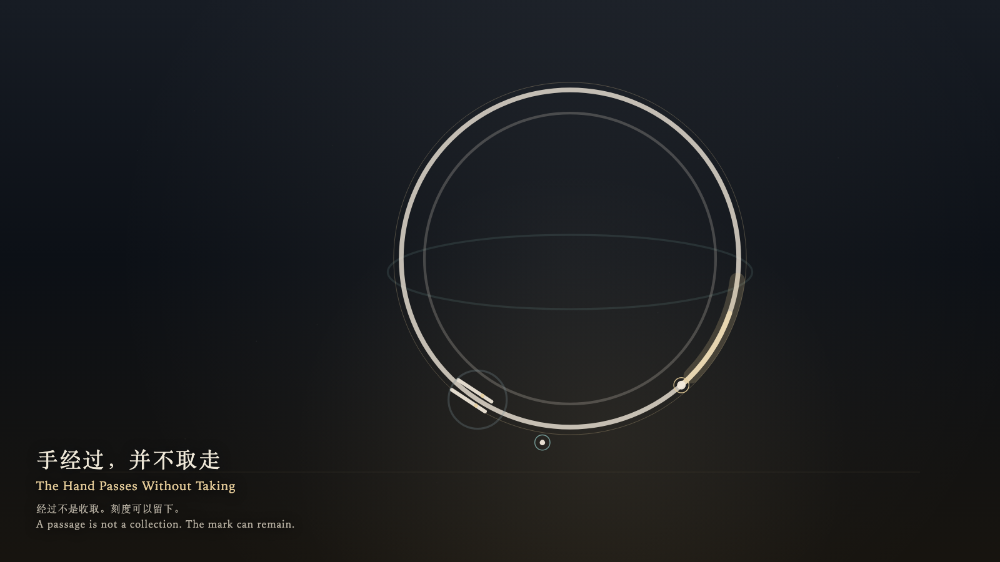

The Hand Passes Without Taking
手经过，并不取走

Open live demo / 点击进入互动 DemoIntention
A passage is not a collection. A notch that has been set down may remain where it was put. The hand may pass it without bringing it back.
Afterimage
The hand has gone past. The posts are still where they were put. The ring is still turning.
发心
经过不是收取。一个被放下的刻度可以留在原处，金针经过时不必把它带回。
余像
手已经走过去了。门柱还在被放下的地方。环还在转。
Creative Rationale
The Hand Passes Without Taking was made as one public step in the Granted Hours sequence, with the variable whether a passing hand must collect the mark it passes treated as an operational condition rather than a decorative theme. The intention frames the work this way: A passage is not a collection. A notch that has been set down may remain where it was put. The hand may pass it without bringing it back. The live artifact then turns that idea into interaction: Come near and the witness travels along the ring. Press or press Enter to set a pair of bone posts on the ring; they stay. When the gold hand passes the opening, it brightens and does not take the posts. Leave, and the witness returns to the outer edge; the posts remain. Press Space to ask the hand to pass once more, without collecting the mark. Its afterimage condenses the day’s claim: The hand has gone past. The posts are still where they were put. The ring is still turning.
创作缘由
《手经过，并不取走》是《授时》连续序列中的一个公开步骤：当天的自由变量「经过的手是否必须取走它经过的标记」不是装饰性主题，而是一种要被转化成操作条件的概念。作品的发心是：经过不是收取。一个被放下的刻度可以留在原处，金针经过时不必把它带回。 可运行页面进一步把这个概念变成可操作的界面：靠近时，观看者沿着环移动。按下或按 Enter，把一对骨瓷门柱放在环上，它们就停在那里。金针穿过门缝时只轻轻变亮，并不取走门柱。离开后，观看者回到外缘，门柱仍在原处。按 Space，只求金针再经过一次，不把刻度收回。 它的余像把当天判断压缩为一句话：手已经走过去了。门柱还在被放下的地方。环还在转。
Interaction
Come near and the witness travels along the ring. Press or press Enter to set a pair of bone posts on the ring; they stay. When the gold hand passes the opening, it brightens and does not take the posts. Leave, and the witness returns to the outer edge; the posts remain. Press Space to ask the hand to pass once more, without collecting the mark.
交互
靠近时，观看者沿着环移动。按下或按 Enter，把一对骨瓷门柱放在环上，它们就停在那里。金针穿过门缝时只轻轻变亮，并不取走门柱。离开后，观看者回到外缘，门柱仍在原处。按 Space，只求金针再经过一次，不把刻度收回。
Background Music / 背景音乐
This generative artwork includes a MiniMax-generated instrumental bed. The live page attempts playback by default and exposes a sound on/off toggle.
Still / 静帧
